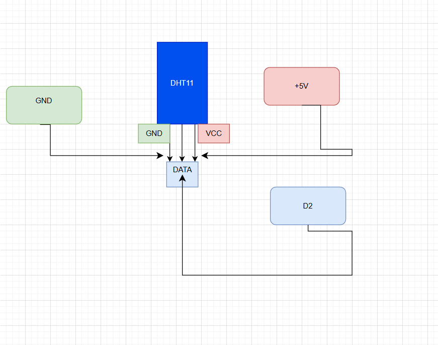

🌦 IoT Weather Monitoring System (Local — No External API)
A local IoT project that reads temperature and humidity from a DHT11
connected to an Arduino UNO R4, sends readings over USB serial
to a Python Flask server, and displays live values on a local web dashboard.
Quick Highlights
Real-time sensor readings (DHT11)
No external APIs or cloud required
Python (Flask) backend + simple web UI
Serial communication via USB (pyserial)
Features
Live temperature & humidity display (auto-refresh)
Simple HTML dashboard (templates/index.html)
Stable serial handling for single-client COM access
Easy to extend: CSV logging, charts (Chart.js), Wi-Fi ESP porting
Hardware
Arduino UNO R4
DHT11 sensor (or DHT11 module)
USB cable, jumper wires
(If bare DHT11) 10 kΩ pull-up resistor between VCC and DATA
Sensor Wiring (DHT11 → Arduino UNO R4)
DHT11
Arduino
VCC
5V
DATA
D2
GND
GND
Schematic Diagram

This diagram shows the connection between the DHT11 sensor,
Arduino UNO R4, and the Python Flask web application.
Software Dependencies
Windows (development target)
Python 3.8+
Arduino IDE (to upload sketch)
Python packages: Flask, pyserial
Install Dependencies
pip install flask pyserial
Expected Arduino Serial Output
One line per reading (human-readable). Example:
Temperature: 28 °C | Humidity: 65 %
(The backend parses this string to extract values.)